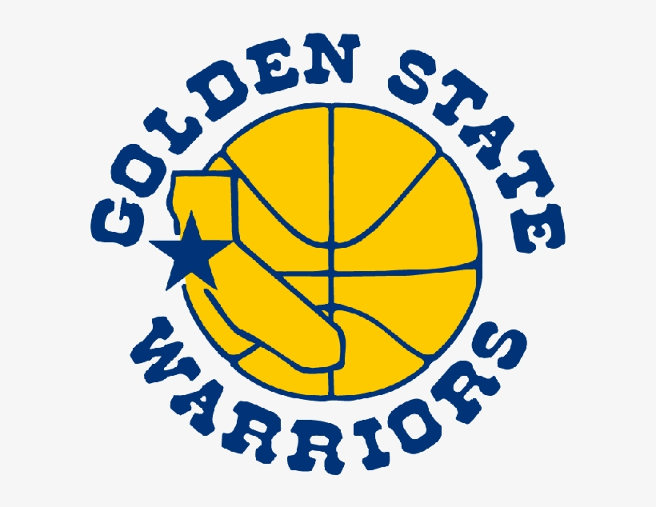

Golden State Warriors
The Golden State Warriors are fully healthy for the first time since 2019. Klay Thompson, a vital part of the team's success, is finally healthy after three years. Jordan Poole, a young guard who was drafted at the bottom of the first round just two years ago, is averaging 29 ppg in his first playoff series ever. The Warriors could sweep the Denver Nuggets, who have the league MVP on their team, with Stephen Curry coming off of the bench due to a minutes restriction in order to heal from a recent foot injury. If the team can get hot and stay hot, they have a serious chance of winning the title this year. Stephen Curry is by far the best shooter in the NBA. If the Warriors have the pieces around him this year, they can succeed.